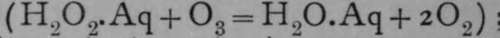
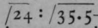

Allotropy. Continued
Description
This section is from the book "Modern Chemistry", by William Ramsay. Also available from Amazon: Modern Chemistry: Theoretical and Modern Chemistry (Volume 2).
Allotropy. Continued
Antimony
The usual form of antimony is a white brittle metal with a faint bluish tinge. If deposited from a strong solution of its chloride by electrolysis, a grey powdery deposit is formed, which has the curious property of exploding when heated or struck ; it then changes into the metallic variety. It has a lower density than the ordinary antimony.^
Oxygen
The allotropic variety of oxygen is named ozone ; it was discovered by Schoenbein, and is obtained by causing a shower of minute electric sparks (the "silent electric discharge") to pass through oxygen, preferably cooled to a low temperature. One of the best forms of " ozoniser" is a tube about 1 cm. in diameter, partially evacuated, and traversed by a wire from end to end; this tube is contained in a wider one, and the space between the two tubes contains a set of metallic annuli, connected together by a wire. Oxygen is passed slowly through the space between the two tubes, while the two wires are connected with the secondary terminals of a coil; sparks pass through the inner glass and the space between the two tubes. On first passing the current the oxygen expands, but almost at once contraction ensues, and ozone issues at the further end of the tube. It is not possible, in dealing with ozone, to use indiarubber connections of any sort, for the rubber is at once attacked. Ozone is also formed when phosphorus slowly oxidises in moist air ; when the vapour of ether or benzene is stirred with a hot glass rod in presence of air ; when sulphuric acid acts on barium dioxide or potassium permanganate, or when sulphuric acid is electrolysed.
It is also produced in large amount when fluorine comes into contact with water.
Its name refers to its most striking property—its strong disagreeable smell. It condenses when cooled by liquid air to a dark blue liquid, which is very explosive ; and its gas, when seen in a long tube, has also a blue colour ; it shows characteristic spectral bands. The blue liquid boils at — I o6°, whereas the boiling-point of oxygen is-1820. Liquid oxygen is also blue, but has quite a pale tint. When heated to 250°, ozone is re-convened into ordinary oxygen; but oxygen cannot be transformed into ozone by heat alone. Ozone is a much more active body than oxygen ; it liberates iodine from potassium iodide (2KI.Aq + O3 + H2O =3 2KOH.Aq + I., + O0) ; it oxidises metallic silver and mercury (Hg + Os = HgO + O9); and it changes lead sulphide into sulphate (PbS + 4O3 = PbSO4 + 4O0). When passed through a solution of hydrogen dioxide, oxygen is evolved  ; and it bleaches indigo and other colouring matters.
Its density is 24, that of oxygen being 16 ; whence its formula is O3. Its rate of diffusion into air bears to that of chlorine, of which the density is 35.47, the ratio of —another proof of its density. When oxygen is converted into ozone, the portion which is changed contracts in the proportion 3:2; and conversely, when ozone is heated and converted into ozone, that portion of the gas which consists of ozone increases in volume from 2 : 3. All these proofs demonstrate that the formula of ozone.
Ozone is a poison ; it excites coughing, and in large quantity asphyxiates, the blood becoming venous. It is very doubtful whether ozone has been found in the atmosphere, except, perhaps, after a thunderstorm.
Sulphur
The allotropy of gaseous sulphur has already been alluded to ; that of liquid and of solid sulphur is no less striking. When sulphur is melted, it forms a mobile, light brown liquid. On raising the temperature, the liquid becomes viscous, so much so, indeed, that the vessel containing it can be inverted without spilling the liquid ; and at a still higher temperature it again becomes mobile, but has a deep brown colour. On cooling, these changes are reversed. If viscous sulphur be poured into water, it hardens to a substance resembling indiarubber ; this form, if kept for some hours, falls into minute octahedral crystals. When molten sulphur is allowed to cool slowly, it solidifies at 120°, forming long monoclinic needles of a pale brown colour. This variety is also deposited on evaporating a solution of sulphur in ether or in benzene. These needles, on standing for a few hours, become opaque and spontaneously fall into minute rhombic octahedra. Octahedral crystals of a large size may be produced by allowing a solution of sulphur in carbon disulphide to evaporate spontaneously ; this variety melts at 115°; its colour is bright yellow; it is in this form that sulphur occurs native. Its density is 2.07, whereas that of monoclinic sulphur is 1.97 at o°. Two other varieties of sulphur are known. If sulphur vapour be quickly cooled, it condenses in a dusty form, termed " flowers of sulphur ; " this powder, if treated with carbon disulphide, leaves an insoluble residue, distinct from all other forms, which are all soluble in disulphide. And lastly, if sulphur be produced in presence of water by the decomposing action of water on sulphur chloride, or by the action or hydrogen dioxide on hydrogen sulphide, the sulphur does not separate, but remains in a state of " pseudo-solution " in the water ; it can be precipitated on addition of salts such as calcium chloride. It is thus evident that the chemistry of the element sulphur is very complicated.
Selenium
This element has three allotropic forms ; when precipitated from selenious acid by sulphurous acid— H2SeO3. Aq + 2H2SO3.Aq = Se + 2H2SO4. Aq + H2O— it forms a red powder, soluble in carbon disulphide, and crystallising therefrom in dark red crystals, a non-conductor of electricity. Either the amorphous red variety or these crystals, if kept at 210° for some time, change into a black crystalline variety, insoluble in carbon disulphide, and conducting electricity on exposure to light. These varieties also differ in density and melting-point.
Ruthenium, Rhodium, And Iridium
Ruthenium, Rhodium, and Iridium are grey-white metals, hard and fusible only at a very high temperature. They are insoluble in hydrochloric, nitric, or sulphuric acid. On alloying them with zinc or lead, and then dissolving out the alloyed metal with acid, the ruthenium, rhodium, or iridium is left as a black powder, exploding when gently warmed, and going back into the ordinary form of the metal.
Iron
It has been known for many centuries that the properties of iron are profoundly modified when it contains a small percentage of carbon; it is then termed steel. Steel has a fine granular fracture, and is not fibrous like pure wrought iron, or coarsely crystalline like cast-iron, which contains a greater proportion of carbon than steel, the latter containing from 0.8 to 1.9 per cent. When steel is heated and then suddenly cooled,—an operation termed " tempering,"—it becomes very hard; this is due to a change which takes place in the molecular structure of iron at 850°. At that temperature its specific heat suffers a considerable change ; and if the iron contains a small percentage of carbon, the allotropic state persists after the cooling has taken place, if produced sufficiently rapidly. The various qualities of steel, elastic as in springs, hard as in razors, brittle and extremely hard as in files, are due to admixture of more or less of the allotropic modification with ordinary iron, which is a comparatively soft metal.
Silver And Gold
Several metals, among them silver, gold, and platinum, when precipitated from aqueous solutions of their salts by some reducing agent, such as sodium formate, form apparent solutions of the metal in water. That of platinum is grey, of silver blue or red, and of gold purple. The colour, however, depends on the state of division of the metal, and it may vary greatly with the same metal. If the " pseudo-solution" of platinum is warmed, the metal is precipitated as a black powder, known as " platinum-black." This substance readily absorbs gaseous oxygen or hydrogen; when heated, it is converted into a grey powder, obviously finely divided ordinary platinum, termed "platinum sponge." On evaporating the pseudo-solutions of silver or gold, the metal remains as a coloured residue ; on warming or rubbing, it changes into the ordinary metal.
These are the known cases of allotropy. In some cases, as when the gases of ozone or sulphur are weighed, a direct clue to the molecular weight, and therefore the cause of isomerism, is revealed; but in others, where the different modifications are liquid or solid, there is no obvious means of tracing the cause of the allotropy. Yet in some instances a reasonable theory can be formed.
Continue to:
- prev: Allotropy
- Table of Contents
- next: Phases Of Elements